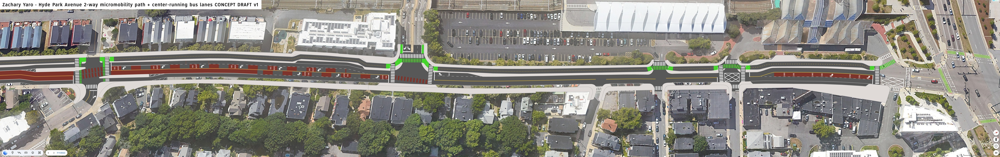
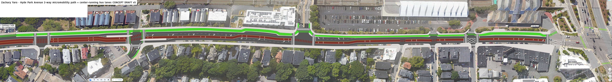

Hyde Park Avenue
Developed with the Boston Cyclists Union and Professor Peter Furth
HPA Redesign Mock-upsIn 2019, and then from 2022-2025, the City of Boston had been working on the Hyde Park Avenue Multimodal Corridor project, which was going to transform the street from one with awful bus delays, deadly pedestrian crossings, and no micromobility infrastructure, to a multimodal “complete street”. Then, in 2025, Mayor Michelle Wu froze the project (along with many other street safety projects), and despite overwhelming neighborhood support, the city cancelled releasing the draft redesign. At time of writing, Hyde Park Ave. continues to host underutilized parking lanes and unmitigated speeding (regularly 20 MPH over the posted speed limit) encouraged by the street's design.
While discussing a campaign for Hyde Park Ave. with the Boston Cyclists Union, I suggested that, while I am not a civil engineer, I am experienced with both learning and copying existing design languages, and understanding and internalizing specifications, so I could use Illustrator to make a scale mock-up what Hyde Park Ave. could look like.

For various reasons I was ignorant of or neglected to consider at the time, my initial drafts wouldn't have worked well in real life. Thankfully, Northeastern University Civil Engineering Professor Peter Furth graciously took the time to review and provide insights on my designs.
The result balances automobile travel and parking with new center-running bus lanes, accessible “floating” bus stops, shorter crossing distances, corner protection at intersections, and micromobility lanes that connect to Forest Hills station and the Southwest Corridor path. If built, it would better serve residents trying to safely walk to the homes, schools, and businesses in their neighborhoods, as well as commuters who travel via public transit or micromobility.
